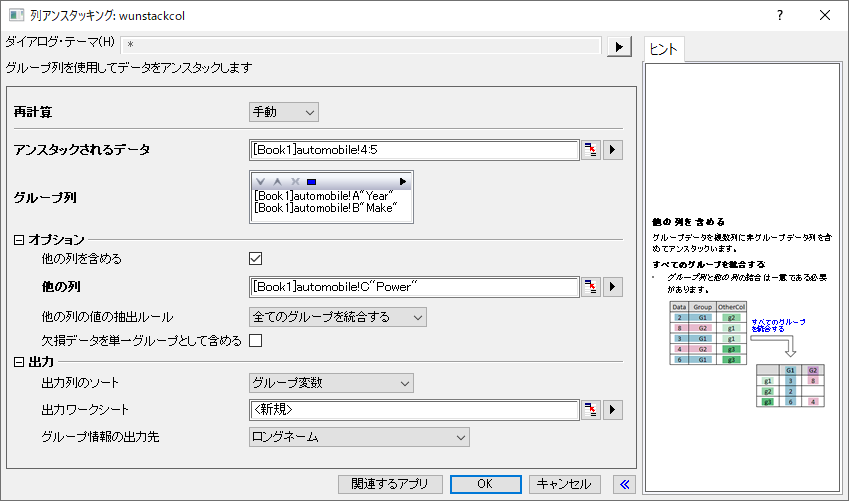
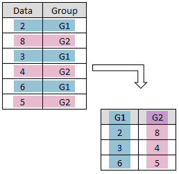
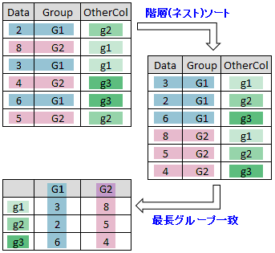
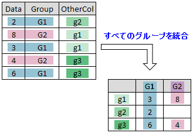
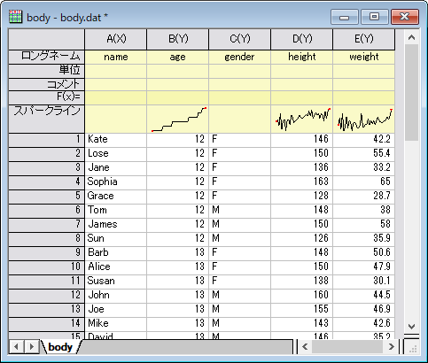
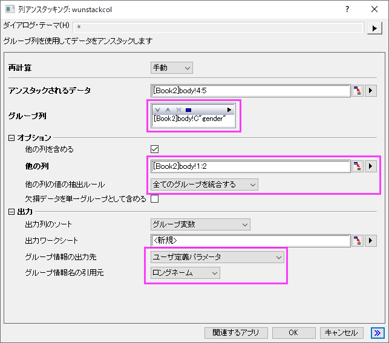
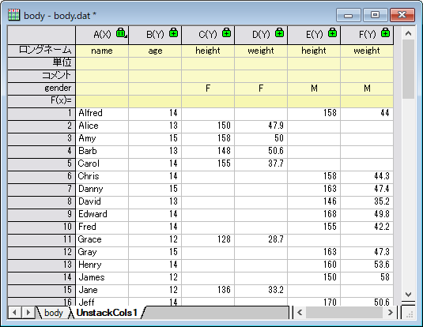
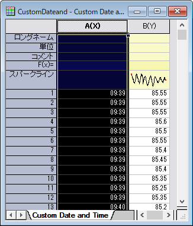
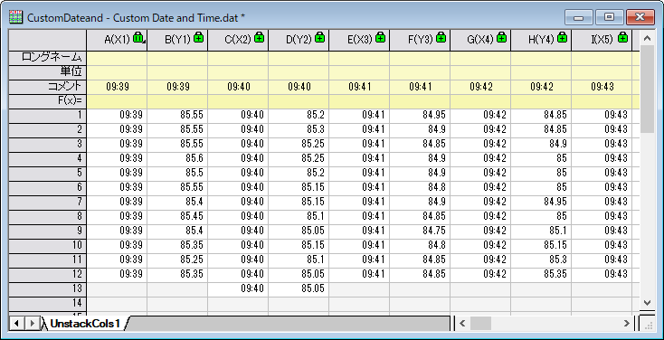
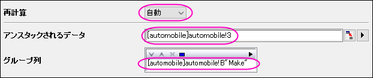

ワークシート列のアンスタック
Wks-Unstacking-Cols
この機能は、グループデータを複数列にアンスタックするのに使用します。アンスタックの際に欠損値を1つのグループとしてまとめることができます。また、出力にグループ外の列を追加する事も可能です。
この機能を使うには
- データの入った新しいワークシートを作成します。
- メニューからデータ整形：列アンスタッキングを選び、wunstackcolダイアログボックスを開きます。
実際には、Xファンクションwunstackcolが呼び出されて操作を行います。
- 
ダイアログの設定
| 再計算
|
結果を再計算する方法を指定します。詳細は分析結果の再計算を確認してください。
|
| アンスタックされるデータ
|
アンスタックされるデータを指定します。
|
| グループ列
|
グループ情報を含む複数のグループ列を、グループ列ボックスに入力します。このグループに従って列のアンスタックが実行されます。ツールバー の、上へ移動 の、上へ移動 、下へ移動 、下へ移動 、削除 、削除 、すべて選択 、すべて選択 、選択 、選択 ボタンでグループ列の追加や削除、順序変更が可能です。 ボタンでグループ列の追加や削除、順序変更が可能です。
列の大部分がテキストの場合、グループ列はプロット後にカテゴリーとして設定されます。そのため、簡単に出力列を並び替えることができます。
|
| オプション
|
他の列を含める
- 元のシートのアンスタックしない列を結果シートに含めるかどうかを指定します。
含める列
- 結果シートに出力するアンスタックしない列のデータ範囲を指定します。これは、他の列を含めるにチェックが付いている場合のみ利用できます。
他の列の値の抽出ルール
- 他の列のデータの配置方法を指定します。これは、他の列を含めるにチェックが付いている場合のみ利用できます。
- 最長グループ一致
- このオプションは、グループ化変数 (グループ列) の各値の個数が等しく、グループ化されていない変数 (他の列) の各値の個数が等しい場合に使用します。例えば、G1 と G2 の 2 つの列にアンスタックされる6つの個体があるとします。非グループ化変数には、g1、g2、g3 の 3 つの値があります。 このオプションを使用するには、G1とG2にそれぞれ3つの個体があり、グループ化されていない変数のg1に2つの個体、g2に2つ、g3に2 つの個体が必要です。このオプションを選択する前に、ネストソートを実行する必要があることに注意してください (最初にグループ列で並べ替え、次に他の列で並べ替えます)。
- 全てのグループを統合する
- このオプションは、グループ列のデータと他の列のデータを組み合わせて、アンスタックデータのインデックスとして使用します。そのため、グループ列のデータと他の列のデータの組み合わせが一意である必要があります。
欠損データを単一グループとして含める
- 欠損値を一つのグループとするか指定します。
|
| 出力設定
|
出力列のソート
- 出力列をどのようにソートするか指定します。
- グループ変数
- 出力列をグループ変数値で英数字順に並べ替えます。例えば、グループ変数"Make"が2つの値"Acura" と "Buick"を持つとします。アンスタッキング後、列では"Acura"、"Buick"の順で出力されます。
- アンスタックされるデータ
- アンスタックされるデータの順序を保存します。例えば、アンスタックされるデータが[Book1]Sheet1!(3,4)の場合を考えます。アンスタックすると、列3データが最初にリストされ、次に列4データがリストされます。アンスタックされるデータが[Book1]Sheet1!(4,3)の場合は、列4データが最初にリストされ、次に列3データがリストされます。
出力ワークシート
- アンスタックした結果を出力する場所を指定します。
グループ情報の出力先
- グループ情報の出力先を指定します。
- ロングネーム
- グループ情報をロングネーム行に出力します。
- コメント
- グループ情報をコメント行に出力します。
- データ列のロングネームに追加する
- グループ情報をロングネーム行に追加します。
- ユーザ定義パラメータ
- グループ情報をユーザ定義パラメータ行に出力します。行の名前はグループ情報名の引用元で指定します。
- カスタム
- すべてのグループ化列にラベルの省略形を入力します。ラベルの数は、グループ列の数と同じにする必要があります。各グループ列の情報は、1つのラベル行に格納されます。たとえば、入力に2つのグループ列がある場合、オプションにLCを入力します。group1の情報がロングネームとして、group2の情報がコメントとして設定されます
グループ情報名の引用元
- グループ情報の出力先をユーザ定義パラメータに設定したときに利用できるドロップダウンリストです。グループ情報を格納するユーザ定義パラメータ行の名前付けに使用されます。ソースワークシートのグループ列のラベル行から名前を付けます。選択したラベル行には、ユーザ定義パラメータ行の名前用の文字列が必要で、ない場合はエラーメッセージが表示されます。GUIでは、ソースワークシートにそのラベル行が表示されているかに応じて利用可能なオプションが表示されます。
- ショートネーム
- グループ列のショートネームから
- ロングネーム
- グループ列のロングネーム行から
- 単位
- グループ列の単位行から
- コメント
- グループ列のコメント行から
|
列をアンスタッキングするには
列スタッキングと反対の操作をする機能です。列のアンスタッキングでは、他のアンスタックしていない列をアンスタックした列の結果に追加できます。
- アンスタック
- グループデータを複数列にアンスタックします。
- 
- 他の列を含めたアンスタック
- 非グループデータ列を含めてグループデータを複数列にアンスタックします。
- 最長グループ一致オプションを使用
- 
- 全てのグループを統合するオプションを使用
- 
サンプル
サンプル 1: 基本の使用方法
グループ化データ(<Originインストールフォルダ>\Samples\Statistics\body.dat)を複数列にアンスタッキングするサンプルです。
- <Originインストールフォルダ>\Samples\Statistics\body.datのファイルを新しいワークブックにインポートします。
- 
- 列DとEを選択し、ワークシート：列アンスタッキングを選択(またはコマンドウィンドウで
wunstackcol -d; を入力)し、wunstackcol ダイアログを開きます。
- グループ列の項目にある三角形のボタンをクリックし、C(Y): genderを選択します。
- オプションで、他の列を含めるにチェックを付けます。他の列では、デフォルトの範囲を使用します。
- 他の列の値の抽出ルールドロップダウンリストで全てのグループを統合するを選択します。
- 出力設定のグループ情報の出力先でユーザ定義パラメータを選択して、グループ情報名の引用元でロングネームを選択します。他の設定はデフォルトのままです。
- 
- OK ボタンをクリックし、列をアンスタックします。結果は下図のようになります。
- 
サンプル 2: 日付や時間でアンスタッキングする
この例では、日付-時間列で並べられたグループデータを使用します。
- ワークブックを空の状態にして、データ: インポート: 単一ASCIIファイルを選び、<Originプログラムディレクトリ>\Samples\Import and Export\Custom Date and Time.datを選択します。
- A(X)列の先頭をクリックして列を選択し、列フォーマットを選びます。
- プロパティタブを開き、フォーマットを日付に、表示をカスタム表示を選択し、カスタム表示ボックスに以下を入力してOKをクリックします。
dd.MM.yyyy HH:mm:ss.##
- この操作によって、Originに文字列データを数値として認識させることで数学的処理ができるようになります。
- データシートをスクロールして、文字列の時間の部分(HH:mm:ss.## )が9時から始まっていることを確認します。B(Y)列のデータを時間と分ごとのグループに分けるとします。 グループ分けを行うにはまずA(X)列を再選択し、右クリックして列フォーマットを選び、プロパティタブでフォーマットを時間にし、表示ドロップダウンリストからHH:mmを選択します。
ワークシートは次のようになります。

- 両方の列をハイライトして、ワークシート: 列アンスタッキングと選択します。
- グループ列にA(X)を設定します。初期設定のまま、OKボタンをクリックします。データが
HH:mmごとにグループ分けされ、グループ情報が新しいワークシートのコメント行に表示されます。

サンプル3: アンスタッキングした列を並び替える
このサンプルでは<Originインストールフォルダ>\Samples\Statistics\automobile.datのPower列をMakeごとにアンスタッキングします。
- ファイル <Origin インストールフォルダ>\Samples\audtomobile.datを新しいワークシートにインポートします。
- 列Cを選択し、ワークシート：列アンスタッキングを選択し、wunstackcol ダイアログを開きます。
- グループ列の項目にある三角形のボタンをクリックし、B(Y): Makeを選択します。
- 再計算を自動に変更し、その他はデフォルトのままとします。
- 
- OK ボタンをクリックし、列をアンスタックします。B列はカテゴリカルに設定されていることに注意してください。
- UnstackCols1シートの全てのデータを選択し、作図> 複数区分/軸: ラベルから複数パネルを一括作成を選択します。
- グループ識別子にコメントを指定します。OK をクリックして複数パネルグラフを作成します。パネルの並び順はUnstackCol1シートの列の順番に準じています。
- 例えば、メーカー名のアルファベット順にパネルを並び替える場合は、元となるワークシートのカテゴリ順を変更することです。automobileシートに戻ります。B列のカテゴリセルのヘッダーをダブルクリックします。
- カテゴリーダイアログで、カテゴリーの編集(追加、削除、任意の順)をチェックします。表のヘッダーをクリックして、カテゴリーをアルファベット順に並び替えます。OKをクリックします。
UnstackCols1とグラフ内のパネルの順序が更新されていることを確認してください。